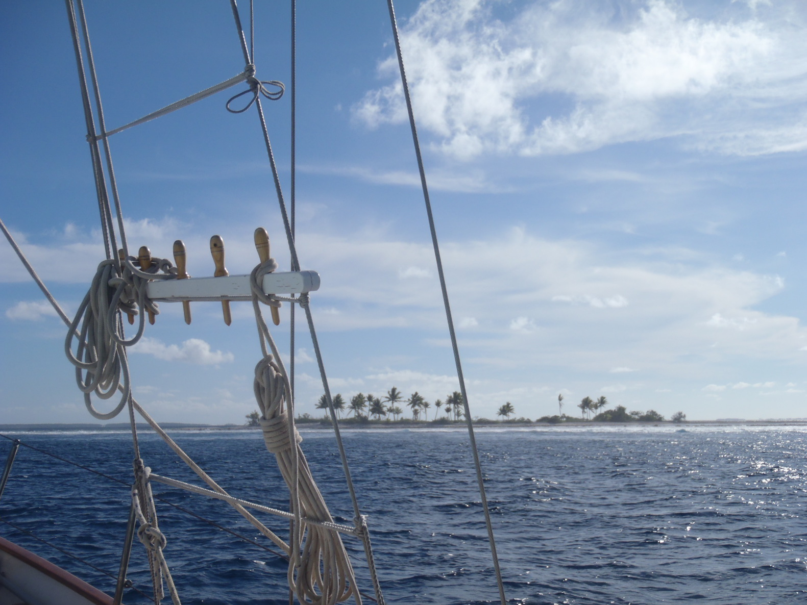
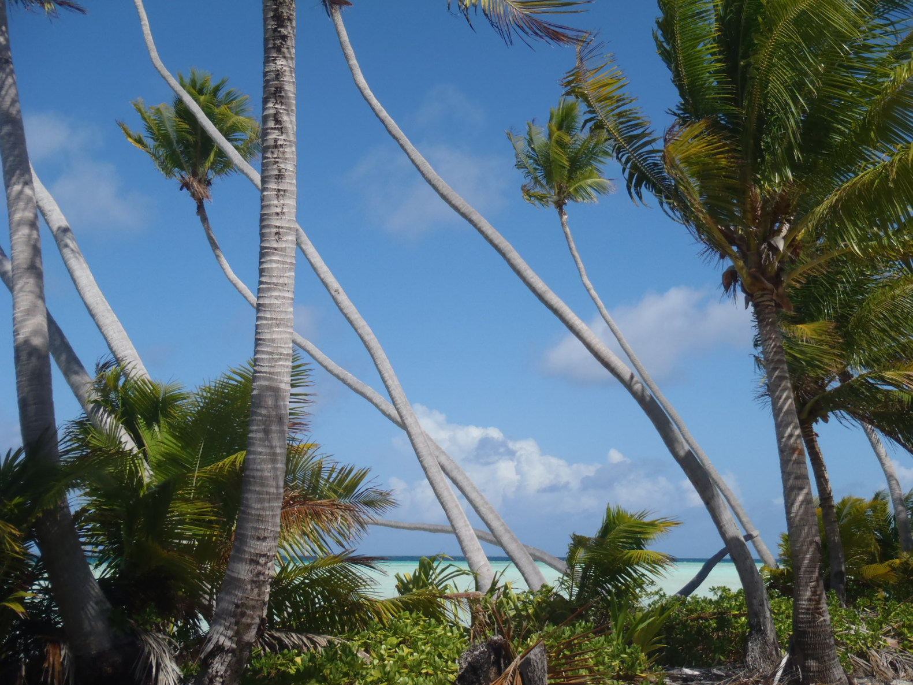
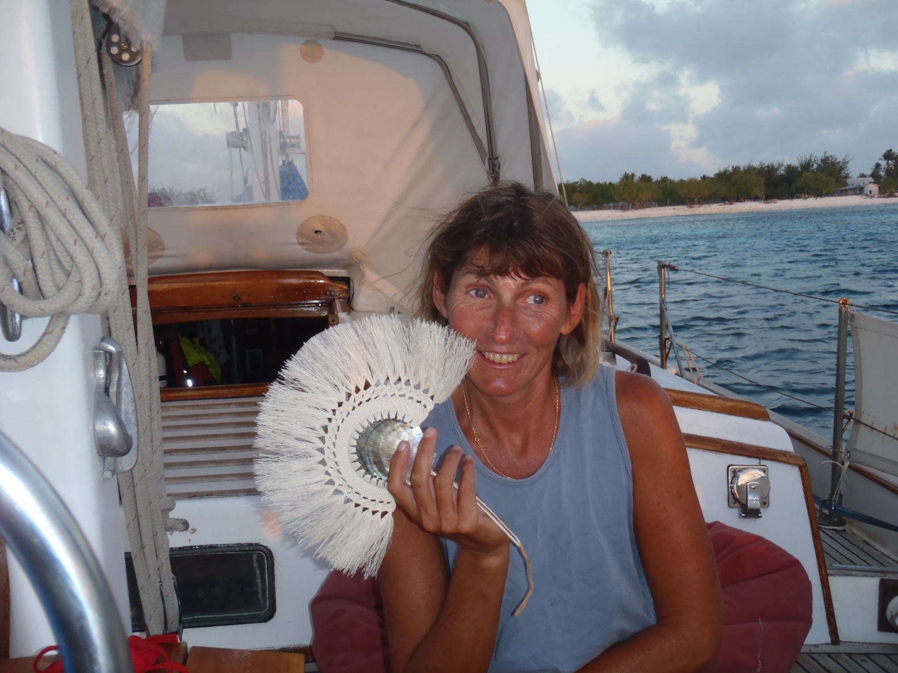

Northern Cook Islands, Tongareva |
Mardi 8 février 2011 |
|

Cette île (qui est un atoll) est aussi connue sous le nom de Penrhyn. Tongareva est son nom polynésien, bien plus joli.
Il y a deux "villes" à Tongareva. La capitale - Omoka - a 250 habitants. Te Tautua - de l'autre côté de l'atoll - a 50 habitants. Il y a deux bateaux par an, qui viennent de Rarotonga. Peu après avoir mouillé à Gudgeon Bay, on a eu la visite des officiels. Andrew pour l'agriculture, Taime pour l'immigration. Ces mecs-là ont du temps devant eux... Ils sont restés un moment, à discuter, à regarder partout, à réclamer à boire, etc... On leur a filé un pastis, ça les a un peu calmés. Il y a une taxe de $10 pour l'agriculture. Pour l'immigration, $50 de taxe pour le temps de l'officiel, $55 par personne à bord, et $2.50 par jour, en tant que taxe de port, même si il n'y a pas de port, apparemment. Les officiels de la santé étaient occupés de l'autre côté de l'atoll, ils doivent venir ensuite. Les officiels de la santé - Robin et Tuku - sont venus le lendemain. On leur a offert un café. Il y a une taxe de $20, ils ont vaporisé un coup d'insecticide dans le bateau. Un truc pas trop méchant apparemment, il y avait encore des mouches qui volaient dans le bateau après l'opération. On était donc autorisé à aller à terre après ça, ce qu'on a fait. Il y a des enfants partout, et les gens sont très gentils. |
Jeudi 10 février 2011 |
|

Le mouillage s'est avéré être un peu remuant la nuit dernière..., le vent a un peu forci (environ 6 Beaufort), générant des petites vagues courtes,
et le bateau faisait bien la java... Impossible de dormir à l'avant.
On va à terre ce matin, à la BCI (Bank of the Cook Islands), acheter des dollars Néo-Zélandais, pour s'acquiter des diverses taxes... Ils ne font pas ça, normalement. Il faudra qu'on revienne demain pour voir si quelque chose peut être fait. Durant notre petite visite à terre hier, on a rencontré William et Jemaima dans leur maison juste sur le lagon. Jemaima était en train de tisser du lito pour faire des éventails avec des nacres d'huitres, très joli travail. Elle a demandé à Corine si elle avait des bijoux. Ils nous ont donné des bananes, directement du régime. Aujourd'hui, Corine a fait des crêpes, et elle a fabriqué un collier en argent avec des perles qu'elle avait à bord. Elle a donné aujourd'hui les crêpes et le collier à Jemaima, qui avait un sourire d'enfant sur le visage... En retour, elle a donné à Corine un des éventails en lito qu'elle fabriquait hier. |
Vendredi 11 février 2011 |
|

On a passé une bonne nuit, pas à se faire secouer comme la nuit dernière.
Il pleut aujourd'hui, on n'ira pas de l'autre côté, on a besoin d'avoir le soleil au dessus de la tête, pour voir les patates de corail, la zone n'est pas cartographiée. On a eu les sous à la banque... 1 NZD = 1 USD. Ben voyons ! Jemaima veut savoir comment on fait les crêpes. Le mouillage est très inconfortable ici, on serait beaucoup mieux de l'autre côté de l'atoll, près du village de Te Tautua, mais comme il n'y a toujours pas de soleil, et que c'est pile vent debout, je n'ai pas envie de prendre le risque de naviguer dans cette zone non cartographiée, avec un bateau qui cale 1.80 mètres. Les prévisions ne sont pas encourageantes..., le temps a de grandes chances de rester comme il est. Avec les vagues, on tangue pas mal au mouillage..., le croc sur la chaîne du mouillage a cassé. On en avait un de rechange, on l'a remplacé, mais quand même. Le guindeau a été esquinté aussi, en réparant le crochet. Un des cliquets s'est plié dans un choc. Hé bé ! Si le temps ne se dégage pas pour qu'on puisse traverser le lagon, on s'en ira demain. On ne peut pas rester ici, c'est trop stressant, pour le bateau, et pour l'équipage. |